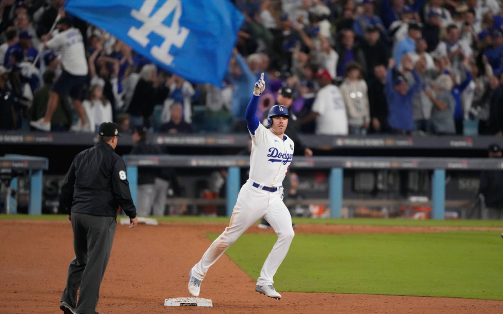

2025 Major League Baseball
The 2025 MLB World Series betting markets are officially open on Draftkings. Even though the season hasn't started yet, it might be a good idea to place a small futures bet while the odds are somewhat static. Once spring training starts, the markets will be rapidly changing from day to day as teams move up and down the standings. Using data available from MLB's Statcast, I selected 3 teams that I think will win it all and take home the penant for the 2025 MLB Season.
- Los Angeles Dodgers +340
- Atlanta Braves +800
- New York Yankees +800
- Philadelphia Phillies +1100
- New York Mets +1200
Betting Odds
-
Los Angeles Dodgers
My top pick is the reigning champions, the Los Angeles Dodgers. A key factor? Shohei Ohtani returns to the mound as part of the starting rotation after spending last season as the team's designated hitter while recovering from "Tommy John" surgery. Ohtani is coming off a historic season, smashing 50+ home runs and stealing 50+ bases—an unheard-of feat, especially for a pitcher. If he stays healthy, the Dodgers have a strong shot at back-to-back titles.
 -
New York Mets
The New York Mets make my list after landing one of the biggest free-agent signings in baseball history: Juan Soto. Adding a generational talent like Soto instantly transforms their lineup, giving them a power bat that can change the course of a game. Pairing him with Pete Alonso and Francisco Lindor creates one of the most dangerous offensive trios in the league. Additionally, their pitching rotation looks promising, with Kodai Senga coming off an impressive season and the potential for another major addition before Opening Day. If their bullpen holds up, the Mets could be legitimate World Series contenders in 2025.

-
Baltimore Orioles
My final pick is the Baltimore Orioles, who finished last season with a strong 91-71 record. The team was in flux last year, as young talent frequently moved between the majors and Triple-A. However, with rising stars like Gunnar Henderson and Adley Rutschman evolving into team leaders, the Orioles should have a more stable and competitive roster this season. A key player to watch is Jackson Holliday—if he improves his on-base percentage, Baltimore could be a serious threat in the postseason.